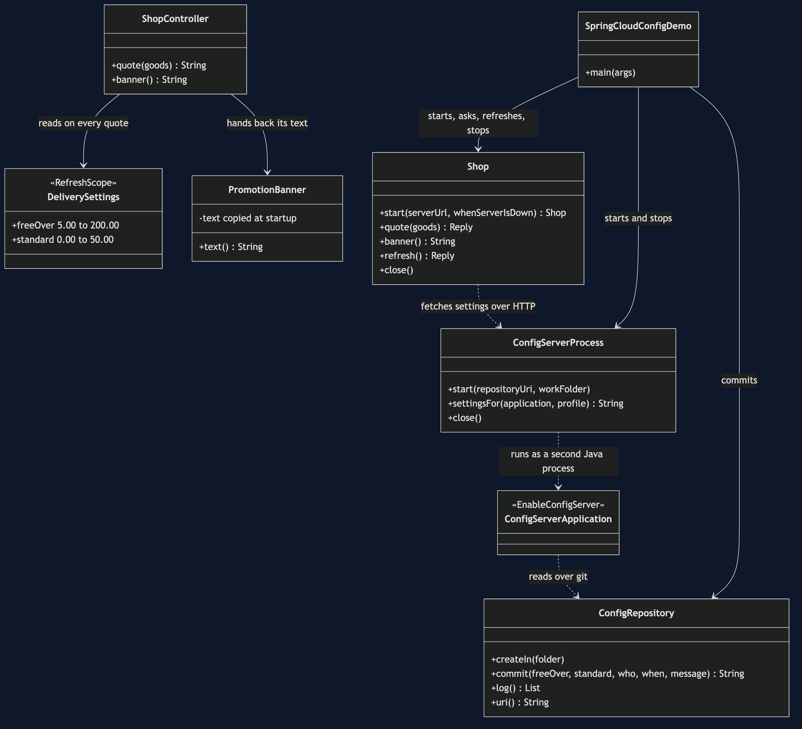
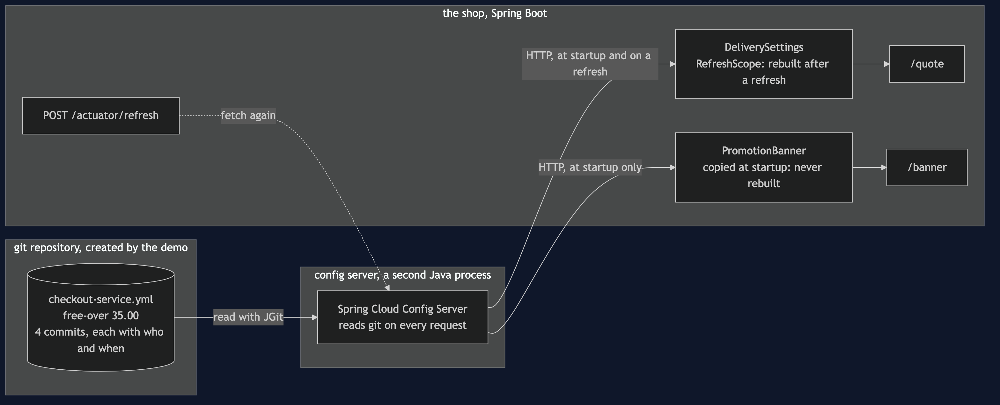
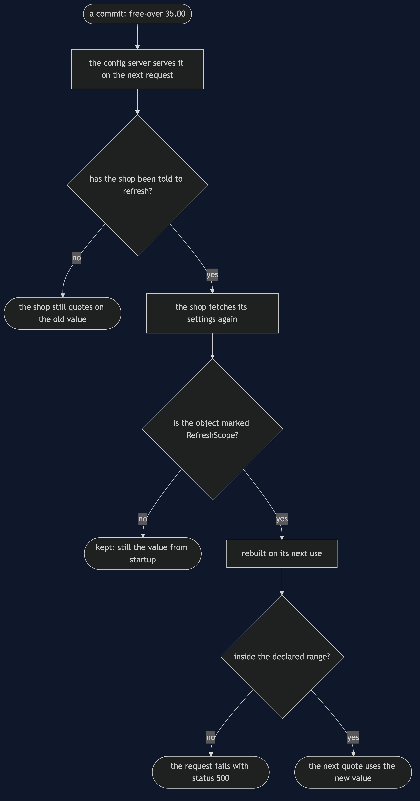
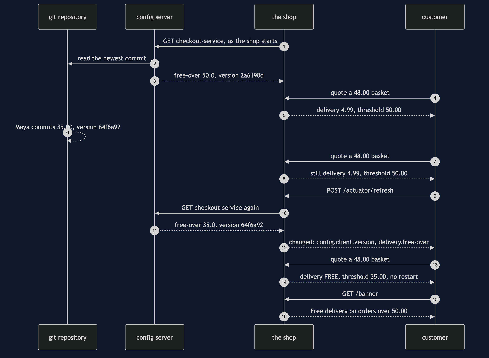
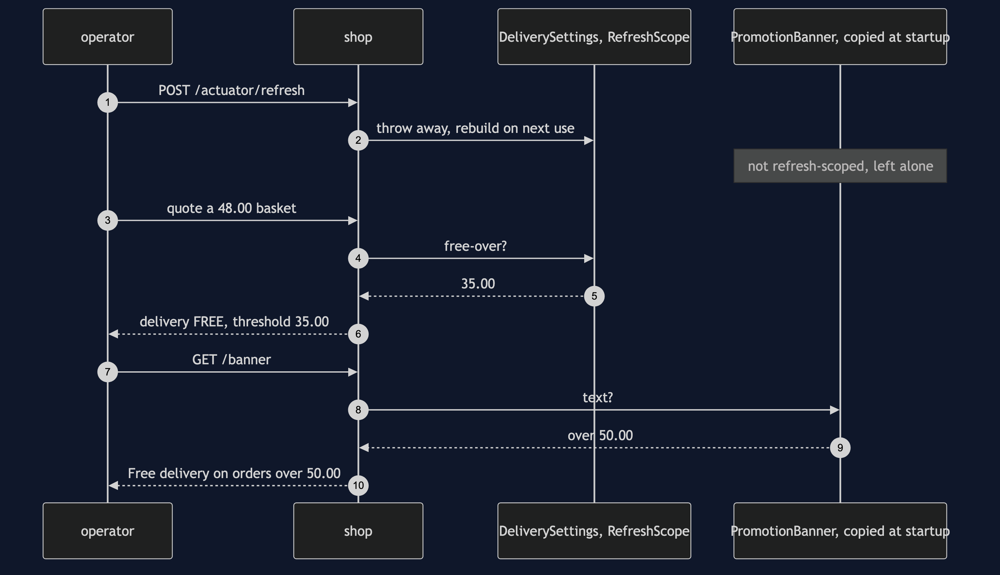
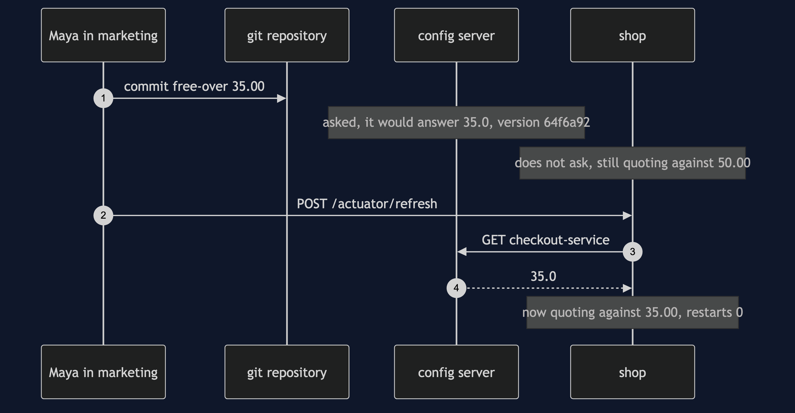
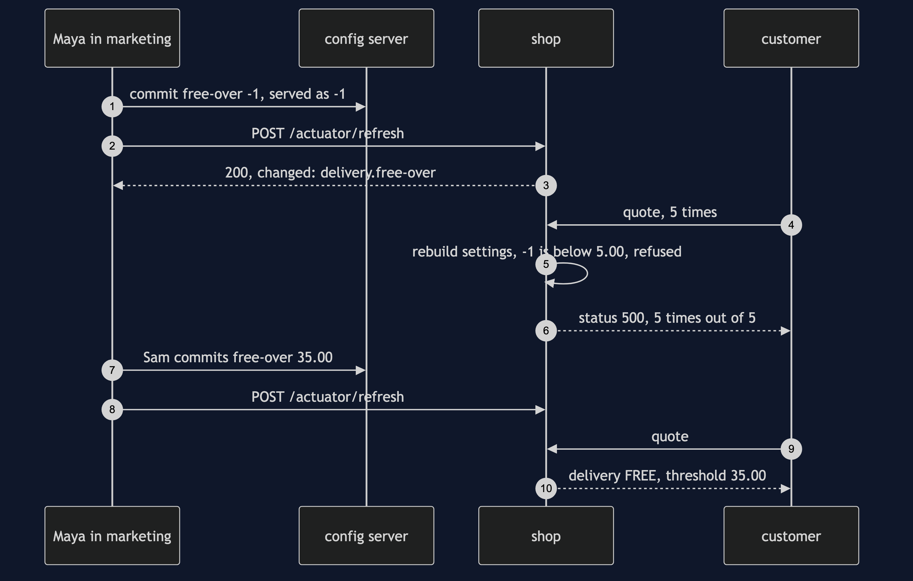
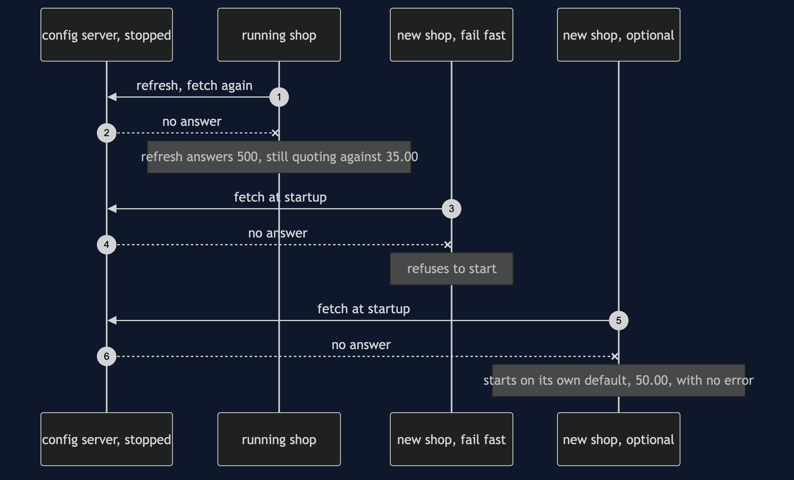

Externalised Configuration with Spring Cloud Config Pattern
src/main/java/com/jk/explore/springcloudconfig/
├── SpringCloudConfigDemo.java the six acts
├── ConfigRepository.java the git repository the server reads; commits with a fixed author and time
├── ConfigServerProcess.java starts and stops the config server as a second Java process
├── Shop.java starts and stops a copy of the shop; asks it for a quote, the banner, a refresh
├── Http.java Poll.java the HTTP calls; every wait is a question asked until the answer is yes
├── server/
│ └── ConfigServerApplication.java the whole config server: one annotation, @EnableConfigServer
└── shop/
├── ShopApplication.java the shop, a Spring Boot web application
├── DeliverySettings.java the threshold, @RefreshScope, with a declared range
├── PromotionBanner.java the same threshold, copied into a field when the shop starts
├── ShopController.java /quote and /banner
└── Money.java £48.00
src/main/resources/
├── config-server.yml the server's own settings
└── shop.yml the shop's own settings, and its local default of £50.00With Spring Cloud Config, the setting is served over HTTP from a git repository, and a refresh changes it without a restart — but only in the parts of the shop that were built to be refreshed. After one refresh, the same running shop quoted against £35.00 and still advertised £50.00.
This project needs no container runtime. The config server is a real Spring Cloud Config Server, but it is a Java program, and the demo starts it as a second Java process on a free port. The git repository it reads is created by the demo in a temporary folder, with JGit, a git written in Java, so not even git needs to be installed. ./gradlew run starts the server and every copy of the shop itself, stops all of them at the end, and deletes the temporary folder.
This project is the real-framework version of the plain-Java Externalised Configuration project in this course. That project kept the delivery threshold in a map inside the same program, and the checkout read it on every quote, so a change reached the very next quote. This one moves the threshold into a git repository, puts a real config server in front of it, and has a real Spring Boot shop fetch it over HTTP. It shows what that adds: a commit that is served but not yet in force, a refresh that takes effect with no restart, the part of the shop the refresh does not reach, and what the shop does when the server is not there.
Run
./gradlew runSix acts. Every number quoted below, and in every document and slide in this project, is this program's own output. Two runs back to back print exactly the same thing, commit ids included: every commit is made with a fixed author and a fixed time, and a git commit id is worked out from exactly those things and the file's contents.
Act 1 - the setting lives in git, and a config server hands it out over HTTP
git commit 2a6198d by Priya in engineering: free-over 50.00
the config server is a separate Java process. asked for checkout-service, it answers:
version 2a6198d, delivery.free-over 50.0
the shop starts and fetches its settings from the server.
quote: goods £48.00 delivery £4.99 threshold £50.00
banner: Free delivery on orders over £50.00
Act 2 - marketing commits a weekend promotion: free delivery over 35.00
git commit 64f6a92 by Maya in marketing: free-over 35.00
the config server answers at once:
version 64f6a92, delivery.free-over 35.0
the running shop has not asked again:
quote: goods £48.00 delivery £4.99 threshold £50.00
committed, and served, but not in force. The shop fetched its settings once, when it started.
Act 3 - the refresh: POST /actuator/refresh, and no restart
the shop fetches again and reports what changed: config.client.version, delivery.free-over
quote: goods £48.00 delivery FREE threshold £35.00
the same running shop: yes, still the copy started in act 1. restarts: 0.
Act 4 - the surprise: the refresh reached the checkout, and not the banner
quote: goods £48.00 delivery FREE threshold £35.00
banner: Free delivery on orders over £50.00
one running shop, two thresholds. The banner copied the value into a field when the shop started,
and a refresh only rebuilds the objects marked @RefreshScope.
after a restart of the shop:
banner: Free delivery on orders over £35.00
Act 5 - the bill: somebody commits -1 on Saturday morning
git commit 6aaf4da by Maya in marketing: free-over -1
the config server does not check values. it serves:
version 6aaf4da, delivery.free-over -1
the refresh answers 200 and reports: config.client.version, delivery.free-over
the next 5 quotes: 5 failed, each with HTTP status 500.
the range check refused -1, and with nothing to fall back to, every quote now fails.
git commit f68331f by Sam on call: free-over 35.00, then a refresh: config.client.version, delivery.free-over
quote: goods £48.00 delivery FREE threshold £35.00
the history is git's own. who changed what, newest first:
f68331f Sam on call Put the weekend promotion back
6aaf4da Maya in marketing Free delivery for everyone?
64f6a92 Maya in marketing Weekend promotion: free delivery over 35 pounds
2a6198d Priya in engineering Free delivery over 50 pounds
Act 6 - the bill: the config server stops
the config server process has stopped.
a refresh of the running shop now answers 500.
the running shop keeps what it already fetched:
quote: goods £48.00 delivery FREE threshold £35.00
a new copy of the shop, told to fail fast:
refused to start: Could not locate PropertySource and the fail fast property is set, failing
a new copy of the shop, told the config server is optional:
quote: goods £48.00 delivery £4.99 threshold £50.00
it started on the default packed inside it. the promotion is gone, with no error.
stopped: the config server process, and all 3 copies of the shop that started. still running: 0.Read act two slowly, because it is the first thing the plain-Java twin could not show. The config server reads the repository on every request, so it answers with the new commit, 64f6a92, and the new value, 35.0, the moment the commit exists. The shop does not. It fetched its settings once, as it started, and it keeps them until somebody tells it to fetch again. Between the commit and the refresh, the value in git and the value in force are different, and neither of them is wrong.
The server prints 50.0 and 35.0 where the file says 50.00 and 35.00, because it reads YAML numbers as numbers and hands them on as JSON. The shop turns them back into money.
After the first run has downloaded the libraries, a run takes about six seconds: most of it is two Spring Boot programs starting, and the shop starting three times.
Test
./gradlew test4 test classes, 16 test methods, about 30 seconds, and nothing to install.
ConfigRepositoryTestneeds no server: the same commits give the same ids on every run, the file is named after the application that reads it, and the log is newest first with who made each change.RefreshTeststarts a real config server process and a real shop for each test and stops both afterwards: the shop quotes with the value fetched at startup, a commit reaches the server at once but not the running shop, a refresh reports the changed keys and the next quote uses them without a restart, a refresh with nothing committed reports nothing, the banner keeps the value it copied at startup, and a restart is what reaches the banner.FailureModesTest: the server serves -1 because it checks nothing, a refused value fails every quote until it is put right, a running shop keeps what it has when the server is gone, a shop told to fail fast refuses to start, and a shop told the server is optional starts on its own default.DemoRunsTestruns the demo and asserts every figure the documents quote.
There is no Thread.sleep anywhere under src/test, and none is needed: a commit is visible to the server on its next request, and a refresh has finished when its HTTP answer arrives. The only wait in the project is for the config server to start, and it is a poll on the server's health page with a limit, in src/main.
What the simulation got right, and what it left out
This is the reason this project exists, so it comes before anything else.
What the plain-Java Externalised Configuration project got right. The shape of the pattern, all of it. The threshold changes on marketing's calendar, not engineering's, so it lives outside the code. The checkout reads it inside the quote, not once when it is built. A value from outside has lost the compiler, the reviewer, the history and the revert that a constant had for free, so each has to be bought back: a type, a range, an audit trail and a quick rollback. And when the source cannot be reached, the shop needs something to trade on. Every one of those holds here, with the same shop, the same £48.00 basket and the same move from £50.00 to £35.00.
What it left out, first: the fetch. In the simulation the source was a map in the same program, and the checkout looked in it on every quote, so a change was in force on the very next quote. A real shop does not ask a server on every quote; it fetches its settings when it starts and keeps them. The second act shows the gap that opens: the commit exists, the config server serves it at once, and the running shop still quotes on £50.00. Something has to tell the shop to fetch again. In Spring that is a request to the shop, POST /actuator/refresh, and the third act shows it working with no restart: the same running copy, restarts 0, now quoting £48.00 with free delivery.
Second, and the headline find: a refresh reaches only part of the shop. The simulation had one reader and it always looked. A Spring application is made of many objects, and a refresh rebuilds only the ones marked @RefreshScope. The checkout's settings are marked, so the checkout moves to £35.00. The promotion banner reads the very same setting with an ordinary @Value, copies it into a field when the shop starts, and is never rebuilt. In the fourth act one running shop quotes against £35.00 and advertises £50.00 at the same moment, and nothing anywhere reports an error. Only a restart brings the banner up to date. This cannot happen in the twin, because the twin had nothing that could hold on to an old copy.
Third: a range check with nothing behind it. The simulation's guarded reader rejected -1 and quietly carried on with the last good value. Spring checks the declared range too, but only when it rebuilds the settings object, which is on the first quote after the refresh. The refresh itself answers 200 and reports the key as changed. Then every quote fails, 5 out of 5, with HTTP status 500, until somebody commits a good value and refreshes again. The bad value never reached a customer, which is the half of the guard that works; the fallback half is not there unless you write it.
Fourth: the server can be down, in two different ways. The simulation's map could be switched off with a field. Here the config server is a real process, and the sixth act stops it. A shop that is already running keeps what it fetched, and only its refresh fails, with a 500. A shop starting from cold has to be told what to do, and the two choices behave very differently: told to fail fast, it refuses to start, with Spring's own sentence; told the server is optional, it starts on the default packed inside it and quotes on £50.00, with the promotion gone and no error anywhere.
What the simulation had to build that git gives for free. The twin wrote a change log by hand so that every change had a name, a time and the value it replaced. Here the setting lives in git, so every change is a commit, and the history at the end of the fifth act is git's own log, newest first: Sam on call, Maya in marketing twice, Priya in engineering. The rollback is a commit too.
Technologies and versions
| What | Version | Why it is here |
|---|---|---|
| Java | 21 | The repository standard, via the Gradle toolchain block |
| Gradle | 9.2.1 | The wrapper in this directory; no separate install needed |
| Spring Boot | 4.1.1 | Both programs, the config server and the shop. The newest generally available release; 4.2.0 is still a milestone |
| Spring Cloud | 2025.1.3 | The release train, imported as a bill of materials. The newest generally available train; 2026.0.0 is still a milestone. Spring Cloud checks the Spring Boot version it starts on, and accepts 4.1.1 |
| Spring Cloud Config | 5.0.5 | spring-cloud-config-server for the server and spring-cloud-starter-config for the shop, both from the 2025.1.3 train |
spring-boot-starter-web | with Boot 4.1.1 | The shop's /quote and /banner pages, and the server's HTTP interface |
spring-boot-starter-actuator | with Boot 4.1.1 | POST /actuator/refresh on the shop, and a health page on both |
spring-boot-starter-validation | with Boot 4.1.1 | The declared range on the threshold, £5.00 to £200.00 |
| JGit | 7.4.0 | A git written in Java. The config server reads the repository with it, and the demo commits with it. This is the version Spring Cloud Config 5.0.5 brings and is tested against; the newest JGit, 7.8.0, is deliberately not forced in underneath it |
| Spring dependency-management plugin | 1.1.7 | Applies Spring Boot's version list, so no Spring library names a version of its own |
| JUnit 5 | 5.10.2 | Test runner |
No container runtime, no installed git and no network are needed once Gradle has downloaded the libraries. Every version is the newest generally available release, except JGit, which stays at the version Spring Cloud Config brings. See docs/dependencies.md and docs/prerequisites.md.
Learning Material
| Document | What it covers |
|---|---|
docs/problem-statement.md | The twin's version, and what is new |
docs/externalised-configuration-with-spring-cloud-config-pattern-explained.md | Spring Cloud Config's words in plain language, and six acts |
docs/class-diagram.md | The types |
docs/architecture-diagram.md | A git repository, a config server process, and the shop |
docs/data-flow-diagram.md | Where a value goes, from a commit to a quote |
docs/sequence-diagram.md | Written for a listener with the screen off |
docs/uml-diagram.md | Four sequences |
docs/animation.html | The six acts in a browser |
docs/prerequisites.md | What you need installed, and what you need to know |
docs/session.md | A one-hour taught session |
docs/dependencies.md | What Spring Boot, Spring Cloud Config, Actuator and JGit are, and what they cost |
docs/spec.md | The generated specification |
docs/youtube.md | Title, description and chapters |
The pattern in one picture

Where each piece sits

How one value moves

Who calls whom, in order

All four sequences




Video
Built from video/scenes.py by video/build_video.sh. The rendered file is not committed; see the repository README for why.
Where you have already met this
Any Spring estate with more than a handful of services: a config server in front of a git repository, each service importing configserver: in its settings, and a refresh sent after a change — by hand, by a pipeline, or broadcast to every instance at once by Spring Cloud Bus. Kubernetes ConfigMaps, HashiCorp Consul and AWS AppConfig solve the same problem with the same two questions attached: when does a running program notice a change, and which parts of it are holding on to the old value?
When this is too much
If the shop runs as one or two instances and a setting changes a few times a year, an environment variable and a restart are simpler and have no server to keep alive. If a value must change many times a minute, or differently for each customer, it is data or a feature flag, not configuration. A config server earns its keep when many services share settings that change on somebody else's calendar, and when the history of every change matters.
Where this sits
This project pairs with the plain-Java Externalised Configuration project in this course, and is its real-framework version in the platform-design-patterns category. Everything it teaches is explained in its own files, so it can be read on its own.